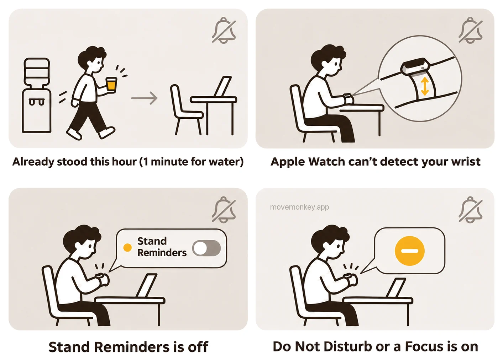
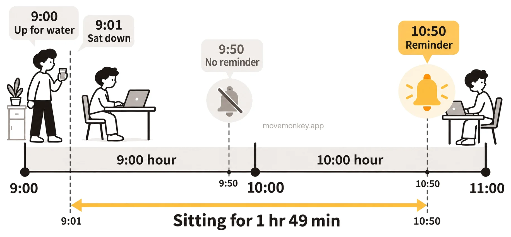

Why Isn’t the Apple Watch Stand Reminder Going Off When It’s On?
Here are the reasons an Apple Watch stand reminder that’s turned on may not go off, and how to check each one, based on what Apple says, what users report, and our own testing.

What usually keeps the Apple Watch stand reminder from going off when it’s on?
Usually it’s because the current hour already counts as a stand hour, even if you only got up for a glass of water and moved for a minute.
Apple Watch tracks standing by the clock hour: if you stand up and move for at least a minute during an hour, that hour counts as a stand hour.[1] Your stand goal is how many stand hours you aim for in a day, and you can set it anywhere from 6 to 16 hours.[2] If you haven’t stood by minute 50 of an hour, you get a stand reminder.[3]
So you can sit for well over an hour without a reminder. Say you get up for a glass of water at 9:00 and sit back down at 9:01: the 9:00 hour already counts as a stand hour, so there’s no reminder at 9:50. The next one comes only at 10:50, after you’ve been sitting for 1 hour 49 minutes. See How does the Apple Watch stand reminder count time?

If you want a reminder when you’ve been sitting too long, consider MoveMonkey, a stand-up reminder app that counts from when you last got up.
Where do you turn on Apple Watch Stand Reminders?
In the Apple Watch app on iPhone, tap My Watch, tap Apps, then tap Activity, and make sure Stand Reminders is turned on.
- On your iPhone, go to the Apple Watch app, then tap My Watch.
- Scroll to the bottom, tap Apps, then tap Activity.[1][4]
- Turn on Stand Reminders.
You can also go to the Settings app on Apple Watch, tap Activity, then turn on Stand Reminders.[4]
If you’ve said you use a wheelchair, the Stand ring becomes the Roll ring[1], and this switch is called Roll Reminders[4].
Do you miss Apple Watch stand reminders if the watch isn’t worn properly?
You might. Apple says that when Apple Watch can’t detect that it’s on your wrist, the issues you might notice include “Apple Watch doesn’t provide reminders to stand.”[5]
The cases Apple lists include wearing Apple Watch too loosely or too tightly, and having something like a bracelet or shirt sleeve between it and your wrist. Apple suggests adjusting the band so the sensor on the back of Apple Watch makes contact with your skin, and says, “The fit should be snug but comfortable.”[5]
Does Apple Watch still remind you to stand with Do Not Disturb, a Focus, or Silent Mode on?
With Do Not Disturb on, it doesn’t. In Silent Mode and Theater Mode, there’s no sound, but if you allow haptics, you still feel a tap on your wrist. With a Focus on, you may not get it.
Apple lists Activity reminders among the notifications on Apple Watch.[6] Here’s how Apple describes what each way of silencing does to notifications[7]:
Sounds, haptics, and visual notifications in each Apple Watch silencing mode
| Mode | Sounds | Haptics | Visual notifications |
|---|---|---|---|
| Silent Mode | Off | On (if you allow) | On |
| Theater Mode | Off | On (if you allow) | Off |
| Do Not Disturb | Off | Off | Off |
| Focus | Off (with exceptions you set) | ||
In October 2026, we tested on watchOS 27.0.1. With the Sleep Focus set to Allow Notifications From and only Alarms and Sleep on the list, we wore Apple Watch and kept sitting, and no stand reminder came at minute 50. With no Focus on, we sat the same way and got the stand reminder at minute 50. We also found that stand reminders don’t stay in Notification Center the way other apps’ notifications do, so you can’t find a silenced one afterward. For how Allow Notifications From differs from Silence Notifications From, see Why does Apple Watch still tell you to stand in sleep mode?
What if the Apple Watch stand reminder is too faint to notice?
You can make the haptics stronger: go to the Settings app on Apple Watch, tap Sounds & Haptics, then set Haptics to Prominent.[8]
You can also change this on iPhone: go to the Apple Watch app, tap My Watch, then tap Sounds & Haptics.[8]
What if Apple Watch still doesn’t remind you to stand after you’ve checked all this?
Some users suggest turning Stand Reminders off and back on; others on watchOS 26 still got no reminders after doing so.[9]
To find the switch, see where to turn on Stand Reminders above.

Stand-up reminder app · Now available on the App Store
MoveMonkey: a stand-up reminder that counts from when you last got up
A little monkey reminds you only after you’ve sat for the time you set (30, 45, 60, or 90 minutes) since you last got up. It works on iPhone and Apple Watch, or on iPhone alone, and walking or standing starts the timer over.
It starts counting only after you’re up in the morning, can stay quiet during your Lunch Break, and reminds you only during the Reminder Hours you set.
Tap Get Up, walk for just a minute, and the monkey cheers for you.
MoveMonkey’s core features are free forever, with no ads.
Learn more about MoveMonkey →